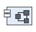

DRACO
SystemComponent
DRACO - CENSSAT Differential Drag Experiment > DRACO - CENSSAT Differential Drag Experiment > System Analysis > Structure > DRACONo description.
Features
- Is Actor : false
- Is Human : false
- Is Abstract : false
Allocated Functions
 Acquire Spacecraft State
Acquire Spacecraft State- Generate Attitude Reference
- Compute Attitude Control
- Log Experiment Data
- Process Experiment Start Command
- Maintain Safe DRACO Operation
 Duplicate 11
Duplicate 11